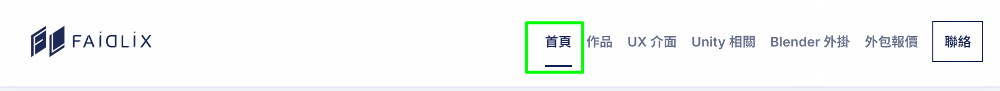

Faidlix Texture Marge — 從密集設定到分段工作流
把來源圖片、通道編輯、材質建立與輸出拆成清楚步驟；常用操作保持可見，進階設定預設收合，降低掃描成本。
調整前 · 所有控制同時展開
→
調整後 · 任務導向與明確主操作
資訊層級標題、輸入、主操作依序排列
狀態回饋更新與輸出結果直接顯示
非破壞流程清楚區分建立、套用與匯出
UX / UI CASE STUDIES
從 Blender 外掛的實際使用情境出發，重新整理資訊層級、操作節奏與回饋狀態。這些介面不只要好看，更要能在製作流程裡快速、穩定地工作。
把來源圖片、通道編輯、材質建立與輸出拆成清楚步驟；常用操作保持可見，進階設定預設收合，降低掃描成本。
在 Blender Outliner 原有結構旁加入三態勾選欄，支援物件、集合與骨架階層，同時保留原生圖示與限制控制。
將檢查、下載、成功與失敗狀態整合在唯一的 Online Update 控制上，避免重複標籤與不知道下一步的情況。
把每一輪實際回饋整理成設計決策：網站維持作品集主體，Blender 外掛與 Unity 內容作為獨立分類；主視覺降低頭像權重，導覽則移除重複首頁入口並在窄版改用漢堡選單。之後提出的 UI／UX 需求，也會持續追加在這個案例的時間軸中。

移除重複首頁按鈕，以 Logo 返回首頁；窄版改用三線漢堡選單。
Unity WebGL 改為 Unity 相關，預留 Shader、特效與 Editor 工具分類。
Unity 作品改成卡片入口，只有按下開始遊玩後才載入 WebGL。
外掛以用途命名、歷史版本加入 UI 預覽，更新來源集中至 BlenderAddons。
導入 Logo、角色圖與模型點線元素，移除白色方框與過度框線。
首頁以作品為主，Blender 外掛與 Unity 改為額外選單頁。
HAVE A WORKFLOW PROBLEM?
Blender 外掛介面、工具 UX 或既有流程改善皆可討論。